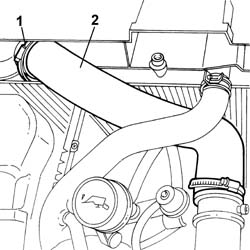
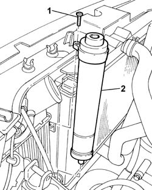

5040A44 AIR CONDITIONER DEHYDRATING FILTER/ACCUMULATOR - R+R
- Path
- Procedures > 50 AUXILIARY UNITS > 5040 AIR CONDITIONING CASING AND COMPONENTS > 5040A CHECKING OPERATION OF AIR CONDITIONER (TEMPERATURE) > 5040A44 AIR CONDITIONER DEHYDRATING FILTER/ACCUMULATOR - R+R
- Kind
- repair procedure (removal / refitting; the operation number is the code)
- Applies to
- all engines; all production periods
- Interactive page
- https://sloeber94.github.io/elrnDB-fUlss/en/#/179007466
Applies to: all engines; all production periods
 Removing
Removing
 Refitting
RefittingOp. 0010T84 COOLANT FOR AIR CONDITIONING SYSTEM DEHYDRATE AND RECHARGE
Op. 5010B18 CLIMATE CONTROL UNIT AIR INTAKE - R.R.

Applies to: all engines; all production periods
Op. 1040A10 FUEL TANK - R + R AND DECANT FUEL
1. Undo the upper retaining bolt
2. Undo the drier filter and remove it.

Applies to: all engines; all production periods
Refitting
Removing- Position the drier filter and tighten it.
- Tighten the upper fixing bolt.
Applies to: all engines; all production periods
Op. 5010B18 CLIMATE CONTROL UNIT AIR INTAKE - R.R.
Op. 0010T84 COOLANT FOR AIR CONDITIONING SYSTEM DEHYDRATE AND RECHARGE
Topics linked from this page (3)
- 0010T84 COOLANT FOR AIR CONDITIONING SYSTEM DEHYDRATE AND RECHARGE
- 1040A10 FUEL TANK - R + R AND DECANT FUEL
- 5010B18 CLIMATE CONTROL UNIT AIR INTAKE - R.R.